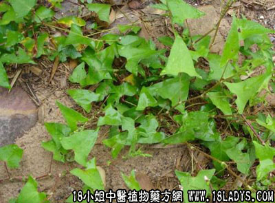

古籍名：雷公藤《本草纲目拾遗》。
别名：大猫脷。
植物名：杠板归。
生长环境：本品为披散或扳援状草木。生于村边、坡地、河边、溪边、及灌木丛中，性较喜阴。
分布：广东各地及我国南方各省均有分布。
入药部分：全草。
采集期：夏、秋。
自采地点：山岗。
性味：性凉、味酸。
功能：清热。
主治、用量和用法：1、癍痧热，配伍用；2、伤寒夹色，配伍用；3、天疱疮：生干可用。煎水洗患处；4、疮疖：用法同上；5、肺燥咳：干用1两，蜜枣4枚，清水煎服；6、皮肤痕痒：生干可用，煎水洗患处。
验方1 （治癍痧热症方）老虎脷、蛇泡簕、路兜簕、岗梅根、山芝麻、海金沙藤、鬼羽箭、榕树须各5钱、清水五碗，煎成一碗服。
（方解）方中之榕树须、鬼羽箭、老虎脷能解表疏散外邪；岗梅生津止渴；海金沙藤、路兜藤、蛇泡簕、山芝麻利小便清肺胃里热而解毒。如风热壅盛，表里俱实者，用之较为适合。
（方歌）癍痧热症夹色方，海沙岗梅虎脷当，芝麻蛇泡路兜簕，鬼箭榕须煎服康。
验方2（治天疱疮方）：老虎脷、飞扬草、天芥菜，各等分，清水适量，煎洗患处。
（方解）天疱疮为热毒之病，皆因脾胃湿热转化而成。方中芥菜清凉解毒；飞扬草、老虎脷收敛水湿，有止痒作用，煎水外洗，欲使邪从外透，为良好之外洗方剂。
（方歌）天疱疮殇痛且红，老虎脷吞疮疖脓，天芥飞扬煎水洗，红痛脓水一扫空。